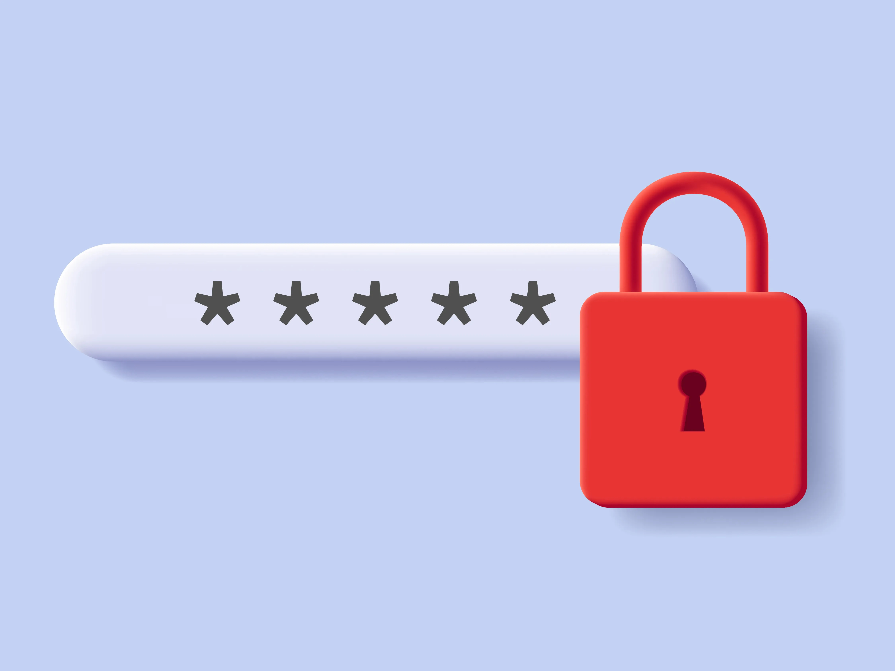

Password Manager Website
Developed a password manager site using Python for data encryption, PostgreSQL for secure data storage, and JavaScript (Node.js), HTML, and CSS for the frontend interface.
Enhanced security by implementing SMTP, SSL, and OT authentication, ensuring strong protection for user data.

Fractal Generator
This is a website I built alongside 3 other group members using html, css, python, Javascript, and datastore.
The "Fractalinator allows users to create fractals and save them if they choose to by creating a login.
A full presentation of the project is available through the Youtube button.

Unbeatable TicTacToe AI
This is a Tic Tac Toe game which no user is ever capable of beating
since it uses a miniMax algorithm to generate an AI that is capable of always
making the most logical move possible which results in a draw in its worst case scenario.